Disabling the Auto Shutoff Feature on the HP Officejet Printers
Scope
Some HP printers ship with an Auto Off feature enabled by default.
This feature turns off the printer after a period of inactivity to reduce power consumption.
The printer will not respond or process any jobs when turned off.
Follow these instructions to disable this Auto Shutoff feature.

|
Note—The Officejet 6230 printer does NOT have the Auto Shutoff Option. |
Parts and Materials Required
- HP Officejet Pro 8100 or Officejet 6100 Printer
- Ethernet cable, ≈ 10 foot length (3 meters)
Time Required
- 30 minutes
Procedure
- Shut down and restart the Panther System and PC and log in to the Panther FSE Shield.
- Verify that the printer is working by printing a report or a test page.
Note—If the printer is new, refer to Installing the HP Officejet 6100, 6230 and 8100 Printersto install and test the printer first. - Turn the printer off and disconnect the USB cable from the printer. Temporarily move the printer next to the Panther System unit, within reach of the PC.
 Connect an Ethernet cable between the printer and the PC.
Connect an Ethernet cable between the printer and the PC.
No other Ethernet cable should be connected to the PC during this procedure.
The Ethernet cable from the Panther System firewall can be used for this step.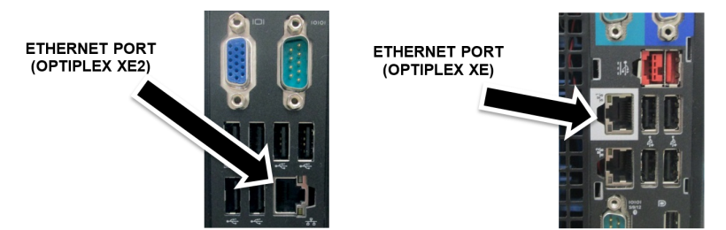
- Turn on the printer, wait for initialization, then print the Network Configuration Page.
- Simultaneously press and release the Resume button and the Wireless button.
(For the Officejet 6230, simultaneously press and release the Info button and the Wireless button.)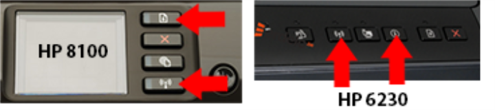
- From the printed Network Configuration Page, under the General Information section, verify that the Network Status indicates Ready and that the Active Connection Type indicates Wired. Note the URL(s) for the Embedded Web Server.
Note—If the URL reads 0.0.0.0, then the printer has not finished initializing. Wait 2 minutes and then print again. 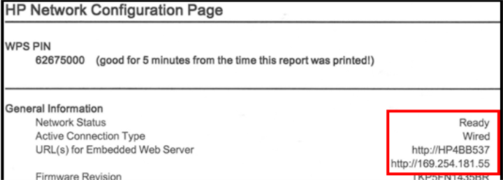
- Exit the Panther FSE Shield by clicking the Log Off button.
- From the Windows login screen, select the gpservice account and enter gpservice for the password.
- Select Start ► Control Panel ► Windows Firewall.
- Select Change Settings.
Note—If using Windows 7, select Turn Windows Firewall on or off from the left pane. 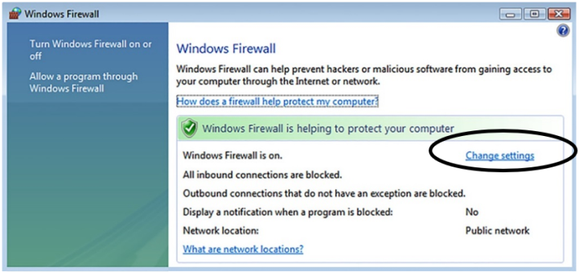
- Select the Off (not recommended) option to disable the Windows Firewall. Press OK, then close the Firewall window.
Note—If using Windows 7, select the Turn off Windows Firewall (not recommended) option for both Home/Work and Public network location settings. 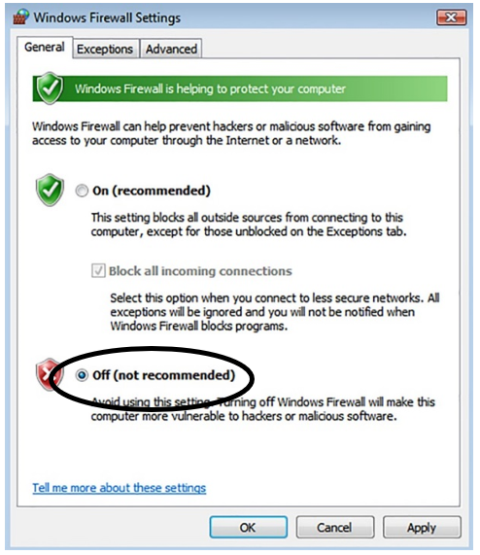
- From the open Windows Explorer screen (open an Explorer window if necessary), type in the IP address for the Embedded Web Server URL (from the printed Network Configuration Page) and press Enter.
Note—If using Windows 7, enable any intranet settings if prompted. 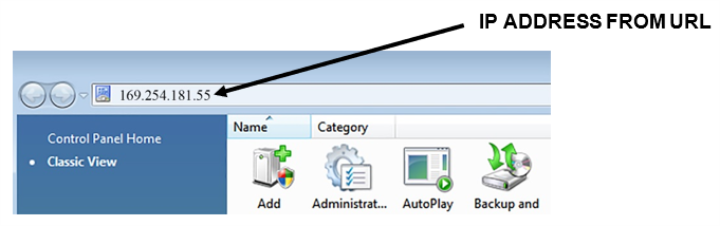
- Disable the Auto-Off feature.
For HP 6100 and 8100 printers:
- From the
- Under Preferences, select Auto Off and make sure that the Disabled option is selected.
- Press Apply.
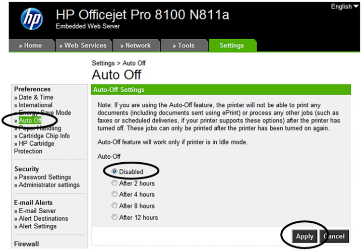
For HP 6230 printers:
- From the
- Under Settings ► Power Management, select Auto Off and make sure that the Disabled option is selected.
- Press Apply.
- On the confirmation screen, press OK.
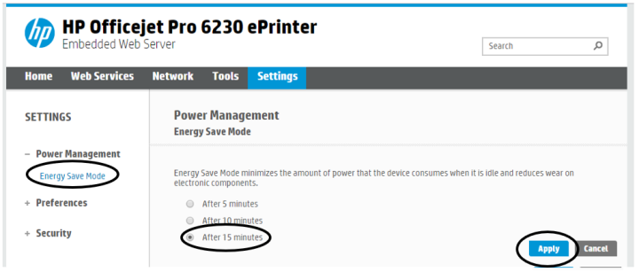
- Exit the Embedded Web Server (close the window).
- If the Windows Firewall window is not already displayed, select Start ► Control Panel ► Windows Firewall.
- Select Change Settings. (For Windows 7, select Turn Windows Firewall on or off.)
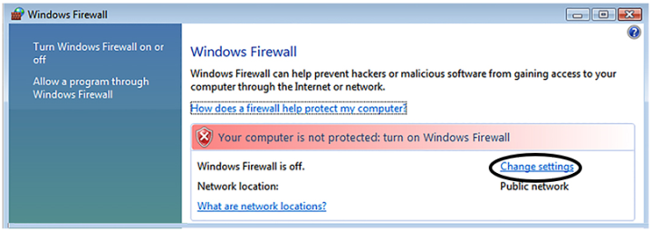
- Select the On (recommended) option to re-enable Windows Firewall. Press OK, then close the Firewall window.
Note—If using Windows 7, select the Turn on Windows Firewall option for both Home/Work and Public network location settings. 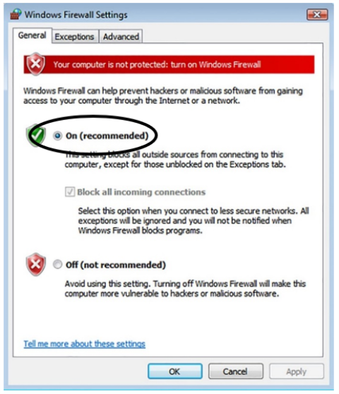
- Select Start ► Log Off.
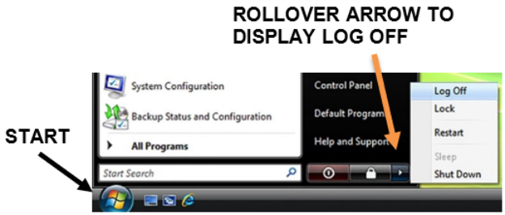
- From the Windows login screen, select the Panther System account and enter panther for the password.
- Power off the printer. Disconnect the Ethernet cable from the printer and the PC, return the printer to its original location, and reconnect the USB cable to the printer.
- If necessary, reconnect the Panther System firewall’s Ethernet cable connection.
- Verify that the printer is working by printing a report or a test page from the Panther System GUI.
 button at the top of the page to send feedback, comments, or change requests.
button at the top of the page to send feedback, comments, or change requests.